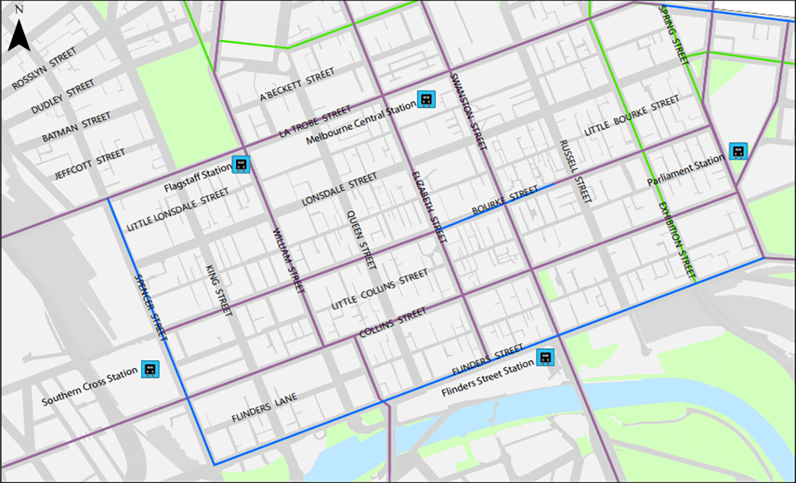

Remote Sensing Thesis
For my thesis, I am using imagery from the Landsat 8 satellite to track the recovery of a bushfire that went through the Bunyip State Park. These images can be processed using
various indicies such as NDVI to quanitify the vegetation health. My aim is to compare indicies to see which provides the most accurate result when compared to ground data.
May, 2019
Population of Greater Melbourne
By Birth Country
This Map uses data from the 2016 Census to show the birth country of citizens (exluding Oceania) to show which suburbs are home to immigrants from different regions
Click below to see the full map with legends
June, 2019
Electronic Gaming Machine Expenditure
Per Person
Using data from the Victorian Commission for Gambling and Liquor Regulation, I produced a map showing how much money per personis spent across every LGA in Victoria
and compared that to the amount of licensed venues there are.
Click below to see the full map with legends

This was produced as an example of how to produce a map targetted at a specific audience. It highlights the important features with major street names as a reference without
being overburdened with data.
Click below to see the full map with legends
October, 2018
Amphitheatre Design
This project combined a Feature Survey with GIS to produce a contour map near Deep Rock Oval. It shows preexisting features such as vegetation and paths to contextualise the
proposed amphitheatre design.
Click below to see the full map with legends
{kind=link}
{kind=link}
{kind=link}
{kind=link}